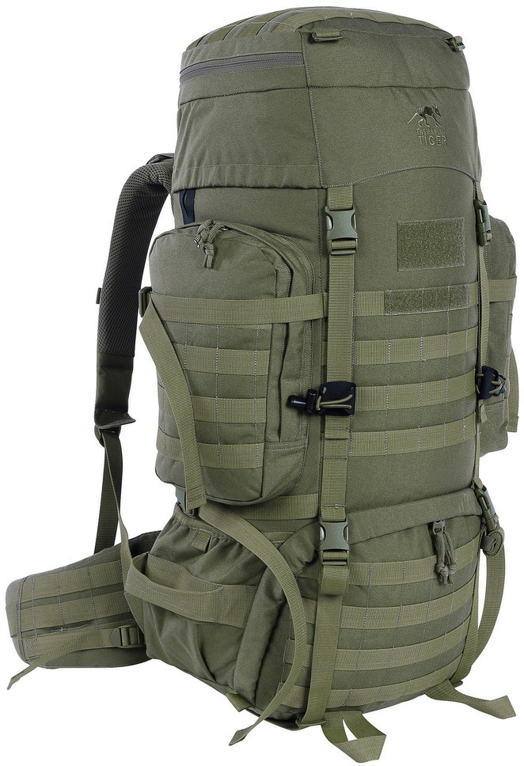

Tasmanian Tiger Raid Pack MK III
Go to Tasmanian Tiger.com
Supplier Description
The TT Raid Pack MK III has a main compartment with a volume of 48 liters and two fixed side pockets with a volume of 2 liters each. MOLLE on the front, the lid, the side pockets and on the hip belt allows individual extension. The V2 Plus Carrying System of the backpack is designed for a weight of up to approx. 40 kilograms and offers great variability when adjusting the back length. Due to the removable hip belt, the backpack can also be carried with fully equipped chest rigs and vests. The hip belt can be used separately as a Warrior Belt.
Summary: 10 / 10
In our reviews we try to be as fast forward as possible.
This is why we rate all the products we tested by the same
schematic.
For each category we rate the product on a scale from 1 to 10
(10 being the highest, because its the highest)
- Price
- Comfort
- Style
- Usefullness
- Durability
The Review in details
Price
Compared to other products with the same size the Raid Pack mk III is
more expensive.
Usually a Backpack with 50-55l is ranged between 180.- CHF to 300.-
CHF
With Tasmanian Tiger being a rather expensive brand it is no surprise
that the Raid Pack MK III is available for around 350.- CHF to 450.-
CHF
The One for around 450.- CHF is a special Infrared repellend color / material. It is only used for the military.
Comfort
I carried the Backpack for over 200km and I never had any complaints
regarding comfort.
The carrier system from Tasmainan Tiger is one of the best in my
opinion.
Even though I would not recommend the backpack to people smaller than
1.65m. Tasmanian Tiger is clearly designed for military use and they
assume the average soldier is about 1.80m.
Never the less, you can see in my description I am not
taller than 1.70m and on smallest setting it works for me.
Style
For a lot of People this will be the most important and to be honest
it was a big selling point to me aswell.
If you dig the Military looks, of course sooner or later you will
stuble upon products from Tasmainan Tiger. They have a huge range of
any Military related products which have also a real use in the
civilan world (most of the time anyway).
The Military looks are not over the top. There is no camouflage pattern. It only comes in solid colors (green, black, beige and the IRR green).